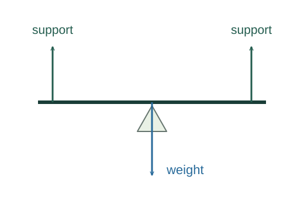

Why equilibrium needs both force and torque balance
A body can have no translational acceleration yet still begin rotating. Static equilibrium therefore requires two independent balances, together with the initial condition that the body is at rest.
What the symbols mean
𝐅ext: external forces; 𝛕ext: external torques about a chosen fixed origin; r⊥: perpendicular lever arm.
When this applies
A rigid body initially at rest in an inertial frame. Balancing forces and torques is necessary for equilibrium, but does not by itself establish stability.
Developing the argument

Stop the centre of mass from accelerating
Apply Newton’s law to the entire object. The centre of mass has zero acceleration only when the vector sum of external forces vanishes.
Stop angular momentum from changing
Two equal opposite forces at different points can form a couple: zero net force but nonzero net torque. Requiring torque balance excludes this rotational acceleration.
A closer lookDerive the torque law ↗Choose a convenient pivot
Torque from a force is its magnitude times its perpendicular lever arm, with a sign for rotational sense. A support force acting at the chosen pivot contributes no torque about it.
Check that the result is origin-independent
Shifting the torque origin by vector 𝐚 changes total torque by −𝐚 × Σ𝐅ext. Once force balance holds, a zero torque sum at one origin is zero at every origin.
A worked example
A uniform 4 m beam weighs 200 N and is supported at its ends. Taking torque about the left end gives Nright × 4 − 200 × 2 = 0, so each support carries 100 N.
Derivation behind this calculation ↗A point to keep straight
An object moving at constant velocity can satisfy both balances without being in static equilibrium in your frame.
Check the assumptions and derivation ↗